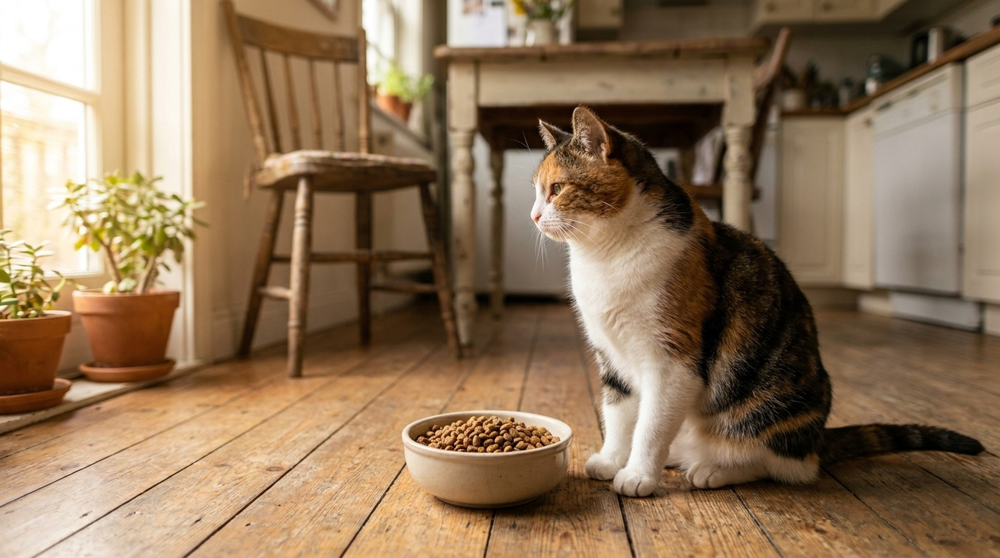

Кошка пропустила завтрак — ещё не трагедия. Но если она не ест уже сутки-двое, это не каприз и не «диета». У кошек есть жёсткое физиологическое ограничение: 48-72 часа голодания запускают опасный процесс в печени — липидоз. Разбираемся, сколько кошка реально может не есть, почему отказывается от еды и что с этим делать.
Здоровая взрослая кошка физически способна прожить без еды 1-2 недели — при условии, что пьёт воду. Но это не значит, что голодание безопасно. Уже через 24-48 часов без еды организм переключается на расщепление собственного жира для получения энергии. Жир поступает в печень быстрее, чем та успевает его переработать, — и начинается накопление липидов в клетках печени.
Это состояние называется гепатический липидоз (жировая дистрофия печени). Без лечения оно приводит к печёночной недостаточности и гибели животного. Кошки — единственные из домашних животных, у которых этот процесс развивается так стремительно. Причина — их уникальный метаболизм: в отличие от собак и людей, кошки не умеют эффективно синтезировать определённые аминокислоты из растительных источников и жёстко зависят от постоянного поступления белка.
Особый риск — у кошек с избыточным весом. Чем больше жировых запасов, тем быстрее развивается липидоз. Полная кошка, переставшая есть на 2-3 дня, — это уже повод для немедленного обращения к врачу, не ожидания.
Котята и пожилые кошки (старше 10 лет) также в зоне повышенного риска: у котят нет необходимых резервов, у пожилых — снижена функция печени и иммунитет.
Это самая частая причина краткосрочного отказа от еды у здоровых кошек. Переезд, ремонт, появление нового питомца или человека в доме, долгое отсутствие хозяина, поездка к ветеринару, гости — всё это может вызвать стресс, при котором кошка отказывается от еды на 12-36 часов.
Отличительные признаки стрессового отказа:
Если стресс длится дольше — нужно помочь кошке адаптироваться: феромоновые диффузоры (Feliway Classic), спокойное пространство без принудительного общения, предсказуемый режим кормления.
Кошки — ярко выраженные неофобы в питании. Если вы резко сменили корм — с сухого на влажный, с одного бренда на другой, с привычного вкуса на новый — кошка вполне может отказаться есть 1-3 дня. Это не каприз, а вполне физиологичная реакция.
Правильный переход на новый корм занимает 7-10 дней: каждый день увеличиваем долю нового корма на 10-15%, смешивая со старым. При резком переходе отказ от еды — почти гарантирован, плюс возможны расстройства ЖКТ.
Также кошки очень чувствительны к изменению температуры корма. Влажный корм из холодильника нередко игнорируется — его нужно подогреть до 35-38°C (температура добычи). Это же правило работает для кошек с притуплённым обонянием — у пожилых животных подогрев корма обязателен.
Зубной камень, гингивит, стоматит, переломы зубов, резорбтивные поражения (FORL) — всё это причиняет боль при жевании. Кошка хочет есть (подходит к миске, нюхает), но не может. Типичная картина: кошка начинает есть, делает 2-3 жевательных движения и уходит, иногда встряхивает головой.
По данным Американской ветеринарной стоматологической ассоциации, к 3 годам у 70% кошек есть та или иная степень заболеваний полости рта. FORL (резорбция зубов) встречается у 28-67% домашних кошек и часто остаётся незамеченной без специальной диагностики.
Решение — только профессиональный стоматологический осмотр и лечение под общей анестезией. Домашняя гигиена полости рта (специальные пасты Virbac CET, щётки) — профилактика, но не лечение уже имеющегося поражения.
Гастрит, воспалительное заболевание кишечника (ВЗК), кишечная непроходимость, панкреатит — все эти состояния сопровождаются отказом от еды. Сопутствующие симптомы:
Особо опасна кишечная непроходимость — частичная или полная. Кошки нередко заглатывают нитки, резинки, новогодний дождик, кусочки игрушек. Линейные инородные тела (нитка, привязанная к иголке) особенно опасны — они буквально «пилят» кишечник изнутри. Это хирургическая экстренность.
Хроническая болезнь почек (ХБП) — самое распространённое заболевание кошек среднего и старшего возраста. По разным данным, ею страдают 30-40% кошек старше 12 лет. Один из ранних симптомов — снижение аппетита и тошнота из-за накопления в крови продуктов азотистого обмена (уремия). Кошка при этом пьёт много воды и часто мочится.
Заболевания печени (холангит, холангиогепатит, липидоз уже вторичного характера) также дают стойкую анорексию. При желтухе (желтушность слизистых, кожи ушей) это видно визуально — немедленно к врачу.
Ранняя диагностика ХБП — анализ крови на мочевину, креатинин, фосфор, SDMA (симметричный диметиларгинин — позволяет выявить ХБП на 2 года раньше, чем стандартные маркеры) плюс анализ мочи на УПГ (удельный вес мочи). Лечение ХБП замедляет прогрессирование, но требует диеты с ограниченным фосфором (Royal Canin Renal, Hill's k/d).
Вирусные инфекции (герпесвирус, калицивирус — особенно у непривитых кошек), бактериальные инфекции, токсоплазмоз, FIV (вирус иммунодефицита кошек) и FeLV (вирус лейкоза кошек) — всё это вызывает системное недомогание и отказ от еды. Обычно сопровождается вялостью, повышением температуры (норма у кошек 38-39,2°C ректально), выделениями из глаз или носа.
Гипертиреоз у пожилых кошек — парадоксальный случай: аппетит может быть повышен, но кошка теряет вес. Иногда — наоборот, анорексия на фоне тахикардии и повышенной возбудимости. Анализ на тироксин T4 обязателен для кошек старше 8 лет при любых метаболических нарушениях.
Не ждать, наблюдать и «давать попробовать другой корм» в следующих случаях:
Эти приёмы работают только при стрессовом или поведенческом отказе от еды у здоровой кошки. При подозрении на болезнь — они не заменяют врача, а лишь помогают до визита.
Если анорексия продолжается более 3 суток, ветеринар может поставить назогастральный зонд или эзофагостомический зонд (E-tube) для принудительного кормления специальными жидкими диетами (Hill's a/d, Royal Canin Recovery). Это не экзотика — это стандартная практика при лечении липидоза и восстановлении после тяжёлых болезней.
Принудительное шприцевание корма руками — менее надёжный метод, требует аккуратности: кошка может аспирировать корм в лёгкие. Без инструктажа ветеринара делать это не рекомендуется.
Цель — обеспечить кошке минимальный калораж (около 60-70 ккал/кг идеального веса в сутки) до тех пор, пока она не начнёт есть самостоятельно. Лечение первопричины идёт параллельно.
При стойкой анорексии, когда причина установлена и лечение начато, но кошка ещё не ест самостоятельно, ветеринар может назначить медикаментозную стимуляцию аппетита.
Миртазапин — антидепрессант, который в малых дозах у кошек действует как мощный стимулятор аппетита. Применяется орально или в форме трансдермального геля (наносится на внутреннюю поверхность ушной раковины). Эффект развивается через 30-60 минут после приёма. Международно признанный препарат для поддержки кошек при анорексии.
Capromorelin (Elura) — более новый препарат, агонист рецепторов грелина («гормона голода»), одобренный в США для стимуляции аппетита у кошек. Меньше побочных эффектов, хорошо переносится при длительном применении при хронических болезнях — ХБП, онкологии.
Кипрогептадин — антигистаминный препарат с аппетит-стимулирующим эффектом. Применяется реже, чем миртазапин, но доступен и назначается как альтернатива.
Все препараты применяются только по назначению ветеринара — самостоятельно их использовать нельзя. Задача хозяина: не ждать трёх суток, а обратиться к ветеринару на первые-вторые сутки голодания, особенно у пожилой или полной кошки.
При хроническом снижении аппетита, у пожилых кошек или при восстановлении после болезни важно вести дневник наблюдений. Это помогает ветеринару принять правильное решение и не пропустить ухудшение.
AnimaLife позволяет вести такой дневник прямо в приложении и при необходимости быстро показать историю ветеринару.